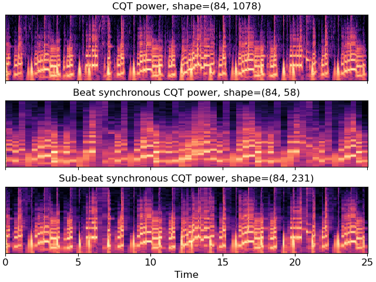

Caution
You're reading an old version of this documentation. If you want up-to-date information, please have a look at 0.9.1.
librosa.util.sync¶
- librosa.util.sync(data, idx, aggregate=None, pad=True, axis=- 1)[source]¶
Synchronous aggregation of a multi-dimensional array between boundaries
Note
In order to ensure total coverage, boundary points may be added to
idx.If synchronizing a feature matrix against beat tracker output, ensure that frame index numbers are properly aligned and use the same hop length.
- Parameters
- datanp.ndarray
multi-dimensional array of features
- idxiterable of ints or slices
Either an ordered array of boundary indices, or an iterable collection of slice objects.
- aggregatefunction
aggregation function (default: np.mean)
- padboolean
If True,
idxis padded to span the full range[0, data.shape[axis]]- axisint
The axis along which to aggregate data
- Returns
- data_syncndarray
data_syncwill have the same dimension asdata, except that theaxiscoordinate will be reduced according toidx.For example, a 2-dimensional
datawithaxis=-1should satisfy:data_sync[:, i] = aggregate(data[:, idx[i-1]:idx[i]], axis=-1)
- Raises
- ParameterError
If the index set is not of consistent type (all slices or all integers)
Notes
This function caches at level 40.
Examples
Beat-synchronous CQT spectra
>>> y, sr = librosa.load(librosa.ex('choice')) >>> tempo, beats = librosa.beat.beat_track(y=y, sr=sr, trim=False) >>> C = np.abs(librosa.cqt(y=y, sr=sr)) >>> beats = librosa.util.fix_frames(beats, x_max=C.shape[1])
By default, use mean aggregation
>>> C_avg = librosa.util.sync(C, beats)
Use median-aggregation instead of mean
>>> C_med = librosa.util.sync(C, beats, ... aggregate=np.median)
Or sub-beat synchronization
>>> sub_beats = librosa.segment.subsegment(C, beats) >>> sub_beats = librosa.util.fix_frames(sub_beats, x_max=C.shape[1]) >>> C_med_sub = librosa.util.sync(C, sub_beats, aggregate=np.median)
Plot the results
>>> import matplotlib.pyplot as plt >>> beat_t = librosa.frames_to_time(beats, sr=sr) >>> subbeat_t = librosa.frames_to_time(sub_beats, sr=sr) >>> fig, ax = plt.subplots(nrows=3, sharex=True, sharey=True) >>> librosa.display.specshow(librosa.amplitude_to_db(C, ... ref=np.max), ... x_axis='time', ax=ax[0]) >>> ax[0].set(title='CQT power, shape={}'.format(C.shape)) >>> ax[0].label_outer() >>> librosa.display.specshow(librosa.amplitude_to_db(C_med, ... ref=np.max), ... x_coords=beat_t, x_axis='time', ax=ax[1]) >>> ax[1].set(title='Beat synchronous CQT power, ' ... 'shape={}'.format(C_med.shape)) >>> ax[1].label_outer() >>> librosa.display.specshow(librosa.amplitude_to_db(C_med_sub, ... ref=np.max), ... x_coords=subbeat_t, x_axis='time', ax=ax[2]) >>> ax[2].set(title='Sub-beat synchronous CQT power, ' ... 'shape={}'.format(C_med_sub.shape))
